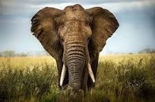

Elephant

This article is about a paraphyletic group. For close extinct relatives, see Elephantidae. For other uses, see Elephant (disambiguation).
Elephant, (family Elephantidae), largest living land animal, characterized by its long trunk (elongated upper lip and nose), columnar legs, and huge head with temporal glands and wide, flat ears. Elephants are grayish to brown in colour, and their body hair is sparse and coarse. They are found most often in savannas, grasslands, and forests but occupy a wide range of habitats, including deserts, swamps, and highlands in tropical and subtropical regions of Africa and Asia.
African forest elephant
African forest elephant
African forest elephant (Loxodonta cyclotis).
Asian elephant
Asian elephant
Asian elephant (Elephas maximus).
The African savanna, or bush, elephant (Loxodonta africana) weighs up to 8,000 kg (9 tons) and stands 3 to 4 metres (10 to 13 feet) at the shoulder. The African forest elephant (Loxodonta cyclotis), which lives in rainforests, was recognized as a separate species in 2000 and is smaller than the savanna elephant. It has slender, downward-pointing tusks. The common belief that there existed “pygmy” and “water” elephants has no basis; they are probably varieties of the African forest elephants.
Asian elephant
Asian elephant
Asian elephant (Elephas maximus).
The Asian elephant (Elephas maximus) weighs about 5,500 kg and has a shoulder height of up to 3.5 metres. The Asian elephant includes three subspecies: the Indian, or mainland (E. maximus indicus), the Sumatran (E. maximus sumatranus), and the Sri Lankan (E. maximus maximus). African elephants have much larger ears, which are used to dissipate body heat.
Form and function
The trunk (proboscis)
African savanna elephant
African savanna elephant
African savanna elephant (Loxodonta africana).
The trunk, or proboscis, of the elephant is one of the most versatile organs to have evolved among mammals. This structure is unique to members of the order Proboscidea, which includes the extinct mastodons and mammoths. Anatomically, the trunk is a combination of the upper lip and nose; the nostrils are located at the tip. The trunk is large and powerful, weighing about 130 kg (290 pounds) in an adult male and capable of lifting a load of about 250 kg. However, it is also extremely dexterous, mobile, and sensitive, which makes it appear almost independent of the rest of the animal. The proboscis comprises 16 muscles. A major muscle covering the top and sides functions to raise the trunk; another covers the bottom. Within the trunk is an extremely complex network of radiating and transverse muscle fascicles that provide fine movement. A total of nearly 150,000 muscle fascicles have been counted in cross sections of trunk. The trunk is innervated by two proboscidean nerves, which render it extremely sensitive. Bifurcations of this nerve reach most portions of the trunk, especially the tip, which is equipped with tactile bristles at regular intervals. At the end of the trunk are flaplike projections enabling it to perform amazingly delicate functions, such as picking up a coin from a flat surface or cracking a peanut open, blowing away the shell, and putting the kernel in the mouth. African elephants have two such extremities (one above and one below); Asian elephants have one. An Asian elephant most often curls the tip of its trunk around an item and picks it up in a method called the “grasp,” whereas the African elephant uses the “pinch,” picking up objects in a manner similar to that of a human’s use of the thumb and index finger. The trunk of the African elephant may be more extendable, but that of the Asian elephant is probably more dexterous.
The cheetah is the fastest land animal over short distances. It has become an endangered species in Africa, and is almost extinct in Asia. Cheetah mother with young. Cheetah cubs
Britannica Quiz
Moms of the Animal Kingdom Quiz
elephant evolution
elephant evolution
Evolution of modern elephants.
Elephants use the trunk like a hand in other ways as well. Tool use in elephants involves holding branches and scratching themselves in places that the trunk and tail cannot reach. Large branches are sometimes wielded, and objects may be thrown in threat displays. When elephants meet, one may touch the face of the other, or they will intertwine trunks. This “trunk-shake” can be compared to a human handshake in that it may be associated with similar functions such as assurance and greeting or as a way of assessing strength.
African savanna elephant feeding
African savanna elephant feeding
African savanna elephant (Loxodonta africana) eating cactus leaves.
Breathing, drinking, and eating are all vital functions of the trunk. Most breathing is performed through the trunk rather than the mouth. Elephants drink by sucking as much as 10 litres (2.6 gallons) of water into the trunk and then squirting it into the mouth. They eat by detaching grasses, leaves, and fruit with the end of the trunk and using it to place this vegetation into the mouth. The trunk is also used to collect dust or grass for spraying onto themselves, presumably for protection against insect bites and the sun. If danger is suspected, elephants raise and swivel the trunk as if it were “an olfactory periscope,” possibly sniffing the air for information.
Get a Britannica Premium subscription and gain access to exclusive content.
Subscribe Now
Sound production and water storage
Elephants produce two types of vocalization by modifying the size of the nostrils as air is passed through the trunk. Low sounds are the growl, rolling growl, snort, and roar; high sounds are the trump, trumpet, pulsated trumpet, trumpet phrase, bark, gruff cry, and cry. Rumbling sounds initially thought to be caused by intestinal activity are now known to be produced by the voice box (larynx) and are considered to be similar to purring in cats. Vocalizations originate in the larynx and a special structure associated with it, the pharyngeal pouch. In the vast majority of mammals, the throat contains nine bones connected in a boxlike structure, the hyoid apparatus, that supports the tongue and the voice box. Elephants have only five bones in the hyoid apparatus, and the gap formed by the missing bones is filled by muscles, tendons, and ligaments. These looser attachments allow the larynx a great degree of freedom and enable the formation of the pharyngeal pouch just behind the tongue. This unique structure facilitates sound production and has voluntary muscles that allow the pouch to be used as a resonating chamber for calls emitted at frequencies below the range of human hearing. These low-frequency (5–24 hertz) calls are responded to by other elephants up to 4 km (2.5 miles) away. Low-frequency sound waves travel through the ground as well as the air, and results of experiments indicate that elephants can detect infrasonic calls as seismic waves. Elephants can produce a variety of other sounds by beating the trunk on hard ground, a tree, or even against their own tusks.
In addition to sound production, the pharyngeal pouch is presumed to be used for carrying water. For centuries people have observed that on hot days and in times when there is no water nearby, elephants insert their trunks into their mouths, withdraw liquid, and spray themselves with it. The source of this liquid and the ability of elephants to withdraw it have posed a mystery even though the pharyngeal pouch was described in 1875. Two plausible sources of the liquid are the stomach and the pharyngeal pouch. Stomach contents, however, are acidic and would irritate the skin. In addition, the sprayed liquid contains small food particles commonly found in the pharyngeal pouch, as opposed to digested food from the stomach. Finally, repeated field observations attest that elephants can spray themselves while walking or running. As it would be difficult to suck liquid from the stomach while running, the most likely explanation for the liquid’s source is the pharyngeal pouch. Another possible function of the pouch is heat absorption, especially from the sensitive brain area above it.
Tusks and teeth
African elephant
African elephant
Two male African elephants fighting.
Elephant tusks are enlarged incisor teeth made of ivory. In the African elephant both the male and the female possess tusks, whereas in the Asian elephant it is mainly the male that has tusks. When present in the female, tusks are small, thin, and often of a uniform thickness. Some male Asian elephants are tuskless and are known as muknas. Tusk size and shape are inherited. Tusks are used for defense, offense, digging, lifting objects, gathering food, and stripping bark to eat from trees. They also protect the sensitive trunk, which is tucked between them when the elephant charges. In times of drought, elephants dig water holes in dry riverbeds by using their tusks, feet, and trunks.
Elephants have six sets of cheek teeth (molars and premolars) in their lifetime, but they do not erupt all at once. At birth an elephant has two or three pairs of cheek teeth in each jaw. New teeth develop from behind and slowly move forward as worn teeth fragment in front and either fall out or are swallowed and excreted. Each new set is successively longer, wider, and heavier. The last molars can measure nearly 40 cm (almost 16 inches) long and weigh more than 5 kg (about 11 pounds). Only the last four molars or their remains are present after about 60 years of age. Sometimes tooth loss is the cause of death, as it brings on starvation.
Natural history
Reproduction and life cycle
Elephants live in small family groups led by old females (cows). Where food is plentiful, the groups join together. Most males (bulls) live in bachelor herds apart from the cows. Males and females both possess two glands that open between the eye and ear. Elephants of all ages and sexes secrete a fluid called temporin out of this orifice. Males, however, enter a “musth period,” during which they secrete a fluid differing in viscosity from the fluid secreted when they are not in musth. Serum testosterone during musth is higher than in a nonmusth elephant, and the animal’s behaviour is erratic; they are uncontrollable (musth is Hindi for “intoxicated”), sometimes even by their own handlers (mahouts). Musth is the time for establishing reproductive hierarchy, which can differ from the usual social hierarchy in that a male in musth outranks nonmusth males. In the wild, males are usually at their prime physical state during musth and ordinarily do most of the breeding.
Elephants are able to assess the reproductive status of one another by using their keen sense of smell. Inside the skull, elephants possess from seven to nine nasal turbinals with specialized sensitive tissues for olfaction. (Humans have only three turbinals; dogs have five.) When a female is in estrus, or when a male is in musth, an elephant apparently can detect airborne hormones. Once “collected,” the information is then passed to the Jacobson’s organ, located on the roof of the mouth. This organ conveys the molecules to the brain for analysis. Hormones are also sniffed directly from urine and feces.
African savanna elephant and young
African savanna elephant and young
African savanna elephant and young (Loxodonta africana), Botswana.
Gestation is the longest of any mammal (18–22 months). The newborn elephant is about a metre (3.3 feet) tall and weighs about 100 kg (220 pounds). It suckles by using the mouth, not the trunk, at mammary glands located in the chest region. Weaning is a long process and sometimes continues until the mother can no longer tolerate the pokes of her offspring’s emerging tusks. After weaning, many hours of each day are spent eating.
Elephants reach sexual maturity early in their second decade of life. African elephants become sexually mature at age 10–12, whereas Asian elephants become sexually mature about age 14. It is during that period that males leave their natal herd (herd of origin) to live either singly or in small herds with other males. Females, in contrast, remain with their natal herd for their whole lives. Despite living apart, adult male and female elephants form short-lived mating or feeding associations with one another.
Elephants can live to 80 years of age or more in captivity but live to only about 60 in the wild. Evidence does not substantiate the existence of so-called “elephant graveyards,” where elephants supposedly gather to die.
Migration
Elephants migrate seasonally according to the availability of food and water. Memory plays an important role during this time, as they remember locations of water supplies along migration routes. Intelligence has also been observed in conjunction with memory. One elephant, using its tusks and trunk, stripped bark from a nearby tree and chewed it until it made a large ball, then plugged a waterhole it had previously dug and covered the plug with sand. Subsequently, the elephant was seen to uncover the sand, unplug the hole, and drink—a behaviour that could be interpreted as tool-making. One study of captive Asian elephants suggested that they are capable of recognizing themselves in a mirror, a trait shared by only a few other nonhuman animal species.
Although unable to jump or gallop, elephants can reach a top speed of 40 km (25 miles) per hour. Their feet are well adapted to carrying their great weight. The heel is partially elevated, and below it is a thick fatty, fibrous wedge of tissue protected by thick skin. It is not easy for elephants to lie down and get up; they sleep lying down for three to four hours during the night. While standing, elephants doze for short periods but do not sleep deeply.
An adult elephant consumes about 100 kg of food and 100 litres (26 gallons) of water per day; these amounts can double for a hungry and thirsty individual. Such consumption makes elephants an important ecological factor; they substantially affect and even alter the ecosystems they live in.
Importance to humans
From hunter to protector in Thailand's Khao Sok National Park
From hunter to protector in Thailand's Khao Sok National Park
Learn about elephant safaris in Khao Sok National Park, southern Thailand.See all videos for this article
For many centuries the Asian elephant has been important as a ceremonial and draft animal. Technically, elephants have not been domesticated, for they have not been subjected to selective breeding for “improvement” of traits desired by humans, as has been the practice with cattle, horses, and dogs. Historical records of tamed Asian elephants date to the Indus civilization of the 3rd millennium BCE. At Mohenjo-daro and Harappa, Pakistan, soapstone carvings depict elephants with cloth on their backs, which indicates use by humans. Mahouts and oozies (elephant trainers in India and Myanmar, respectively) are skilled people who remain in direct contact with the animals for many years. The handlers take care of all the elephants’ needs, and the bond between man and beast becomes very strong. Hastividyarama, an age-old handbook for elephant tamers, spells out prescribed training procedures in detail and is still used today in some parts of Asia. Commanded by its mahout, the elephant was once basic to Southeast Asian logging operations. It remains a symbol of power and pageantry but has been largely supplanted by machinery. At the beginning of the 21st century, Thailand and Myanmar each had about 5,000 captive elephants employed in traditional roles intermingled with modern use as tourist attractions.
The most famous historical event using elephants in war was that of Hannibal, the young commander of the Carthaginians who crossed the Alps from Spain into Italy. He left Cartagena, Spain, in 218 BCE with 37 elephants—36 African forest elephants and one Asian—each under its own well-trained mahout. The Asian, Hannibal’s personal elephant named Surus (meaning “Syrian”), was the only one that survived to reach Italy.
African elephants were also tamed during the 19th century, in what was the Belgian Congo. Training of these forest elephants was initiated by King Leopold II of Belgium and was conducted by Indian mahouts with Asian elephants. African elephants are now used mainly for transporting tourists in Garamba National Park, where they are valuable in providing revenue to sustain its activities.
Conservation
African elephants
African elephants
African elephants (Loxodonta africana) in Botswana.
At the beginning of the 21st century, fewer than 50,000 Asian elephants remained in the wild. Threatened by habitat loss and poaching, Asian and African elephants are listed as endangered species. From 1979 to 1989 the number of African elephants in the wild was reduced by more than half, from 1,300,000 to 600,000, partly a result of commercial demand for ivory. However, in some parts of Africa elephants are abundant, and culling is practiced in some reserves to prevent habitat destruction. A nine-year ban on the ivory trade was lifted in 1997, and Botswana, Namibia, and Zimbabwe were allowed to sell limited stocks of ivory from government warehouses to Japan. In 2000 South Africa joined the three southern African nations in selling limited amounts of ivory from existing stocks.